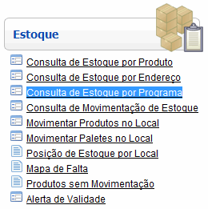
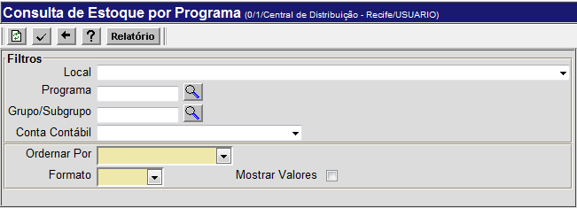
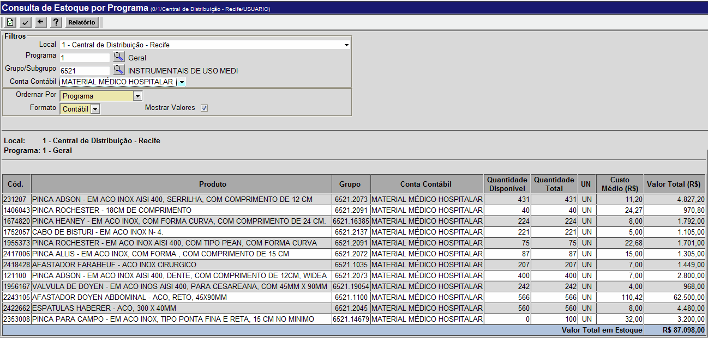
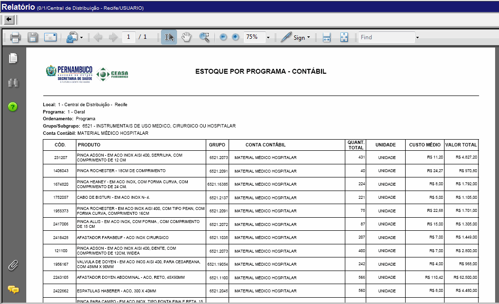

Consulta de Estoque por Programa [ Voltar ]
Utilize este formulário para fazer consultas de estoque para um determinado programa. O
formulário "Consulta de Estoque por Programa" encontra-se dentro do menu "Estoque", com o nome "Consulta de Estoque por Programa".

Após clicar no link, a seguinte tela
será exibida:

Siga os passos para configurar a consulta de estoque por programa:
1º Passo: informe os dados desejados para a consulta. Os campos em amarelo são obrigatórios. - Local. Se desejar, selecione um local específico para a consulta. Se nenhum local for informado, todos os locais serão consultados.
- Programa. Você pode informar aqui um programa específico para esta consulta. Clique no botão
 [Procurar] para selecioná-lo a partir de uma lista que contém todos os programas cadastrados. Se nenhum programa for especificado, todos os programas serão consultados. [Procurar] para selecioná-lo a partir de uma lista que contém todos os programas cadastrados. Se nenhum programa for especificado, todos os programas serão consultados.
- Grupo/Subgrupo. Se desejar, especifique aqui um grupo ou subgrupo específico para esta consulta. Clique no botão
para selecioná-lo a partir de uma lista contendo todos os grupos
cadastrados. Se nenhum grupo/subgrupo for especificado, todos os grupos
serão consultados.
- Conta Contábil. Você pode selecionar uma conta contábil específica para esta consulta. Se nenhuma conta for informada, todos os locais serão consultados.
- Ordenar por. Selecione aqui a forma de ordenamento desejada para os resultados da consulta. As opções de ordenamento são: Por Código do Produto, Por Descrição do Produto e Por Programa. Este campo é de preenchimento obrigatório.
- Formato. Selecione aqui o tipo de relatório que deseja gerar: Contábil ou Físico. Este campo também é de preenchimento obrigatório.
- Mostrar valores. Marque esta opção se desejar que os valores dos produtos sejam exibidos nos resultados.
2° Passo: clique no
botão  para processar a consulta. Os resultados serão exibidos como na imagem abaixo: para processar a consulta. Os resultados serão exibidos como na imagem abaixo: 
3° Clique no botão  para visualizar a versão para impressão do relatório. Para imprimi-lo, clique no botão para visualizar a versão para impressão do relatório. Para imprimi-lo, clique no botão  [Imprimir] do navegador. [Imprimir] do navegador. 
Ir para o topo da página
|